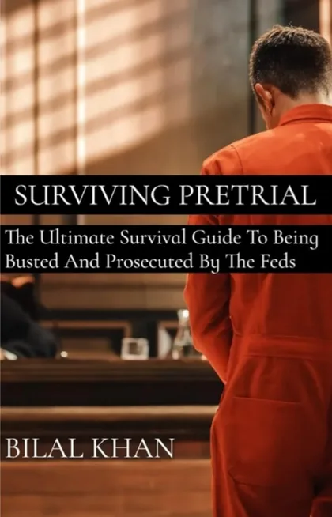

Tonight: protect them, protect yourself
The single most important thing to understand right now: in a federal case, everything is evidence — especially words.
- Don't discuss the case on jail phone calls. Calls from federal custody are generally recorded and can be listened to by prosecutors. Say you love them. Say you're getting organized. Do not talk about what happened, who was involved, or what anyone should say.
- Don't talk to agents about the case. If agents contact you, you can be polite and you can decline to answer questions. "I'm not going to discuss anything without a lawyer" is a complete sentence, and it protects your family member too.
- Don't post about it. Nothing on Facebook, no group texts theorizing about the case. Screenshots outlive good intentions.
- Don't touch anything that could look like evidence. Deleting accounts, moving money, "cleaning up" — actions taken in panic can become new charges. Leave things where they are.
- Write down what you saw. If there was a search or arrest at your home: the time, what agents said, what they took, any paperwork they left. Your memory of tonight will matter later, and it fades fast.
Day one: find out where they are
After a federal arrest, your family member is generally in the custody of the U.S. Marshals Service — which usually means a federal detention center or a local jail that contracts with the Marshals. Finding them is a process, not a mystery:
- Start with the court. Federal arrestees are generally brought before a judge promptly for an initial appearance. The case docket — searchable on PACER (the federal courts' public records system) by name — shows which courthouse, which judge, and when. If you can't navigate PACER tonight, the clerk's office of the nearest federal courthouse can point you in the right direction during business hours.
- Ask the U.S. Marshals. The Marshals office for that federal district can generally confirm where a person in their custody is being held.
- Check the jail's own roster. Many county jails that hold federal detainees have online inmate lookups. The BOP inmate locator (bop.gov) covers federal facilities, though people in Marshals custody at local jails may not appear there.
- The defense lawyer will know. Once counsel is appointed or hired (see below), they can tell you where your person is and how to reach them.
Once you know the facility, learn its rules: how to put money on their books (commissary and phone time matter immediately), the visiting list process, and mail rules. Every facility publishes its own procedures — follow them exactly, because mail and visits get bounced for small mistakes.
The initial appearance: what happens first
The first court event is generally the initial appearance — usually brief. The charges are stated, counsel is addressed (if your family member can't afford a lawyer, one is appointed — federal defenders are real specialists, not a consolation prize), and the court takes up the question of release or detention. Often the detention question is set for its own hearing a few days later.
Those few days are your window. Use them.
The detention hearing: the one to prepare for
The detention hearing generally decides whether your family member waits for trial at home or in a cell — and it can shape everything that follows. The judge is weighing two questions: is this person a flight risk, and are they a danger to the community?
This is where a family can genuinely help. Defense counsel generally needs, fast:
- Proof of stability — residence, length of time in the community, employment (a letter from an employer saying the job is still there is powerful), family ties, community ties.
- A release plan — where they would live, who they'd live with, what supervision would look like.
- A possible third-party custodian — a responsible adult willing to take formal responsibility to the court. If that might be you, think it through seriously before offering; it's a real commitment.
- People in the courtroom. Family sitting in those benches, dressed like it matters, tells the judge someone is waiting for this person on the outside.
Get these to the lawyer before the hearing — don't assume they'll ask.
The lawyer question
You do not have to solve the whole lawyer question in 72 hours. Counsel will be appointed at the initial appearance if needed, and you can evaluate from there. Two things from lived experience:
- Don't panic-hire. The lawyer who answers at midnight and promises outcomes for a big retainer is running a sales funnel, not a defense. No honest federal practitioner promises results.
- Evaluate whoever is on the case — appointed or hired. Do they explain things in plain English? Did they prepare for the detention hearing like it mattered? We keep a free checklist for exactly this: Is my lawyer any good?
What NOT to do this week
- Don't contact anyone else involved in the case — witnesses, co-defendants, their families. However innocent it feels, it can be read as something else entirely.
- Don't drain your savings in week one. Federal cases run for months or years; the family that budgets survives.
- Don't believe either voice in your head — the one saying it's hopeless, or the one saying it'll all just go away. The truth is a process, and it can be learned.
After the 72 hours: learn the road ahead
What comes next — arraignment, motions, the plea decision, the presentence report, sentencing — is a sequence, and every step of it can be understood in advance. That's what Surviving Pretrial is for: 540 pages, written by someone who lived every stage, in language you can read at 2 a.m.

The playbook for everything after this guide.
5.0★ on Amazon · Kindle, Kindle Unlimited & paperback · Amazon can ship it straight into the facility.
More free help: Start Here — the emergency room on our main site walks the whole crisis, step by step.